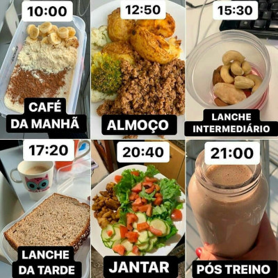

Tudo que precisar saber sobre dieta .
- Equilíbrio Nutricional: Uma dieta equilibrada envolve a ingestão adequada de carboidratos, proteínas e gorduras saudáveis. Cada nutriente desempenha um papel importante no funcionamento do corpo.
- Variedade: Consuma uma variedade de alimentos de diferentes grupos para garantir que você esteja recebendo uma ampla gama de nutrientes. Isso inclui frutas, vegetais, proteínas magras, grãos integrais e laticínios ou alternativas.
- Porções Adequadas: O tamanho das porções é crucial para o controle de calorias e nutrientes. Preste atenção às porções para evitar excessos.
- Hidratação: Beber água suficiente ao longo do dia é fundamental para a saúde. A água desempenha um papel importante na digestão, transporte de nutrientes e regulação da temperatura corporal.
- Alimentos Integrais: Opte por alimentos integrais em vez de processados sempre que possível. Alimentos integrais são ricos em nutrientes e fibras, proporcionando benefícios para a saúde a longo prazo.
- Fibras: Inclua fontes de fibras em sua dieta, como grãos integrais, frutas, legumes e verduras. As fibras ajudam na digestão, promovem a saciedade e podem beneficiar a saúde intestinal.
- Proteínas: Certifique-se de incluir fontes saudáveis de proteínas em sua dieta, como carnes magras, peixes, aves, leguminosas, nozes e sementes. As proteínas são essenciais para a construção e reparo de tecidos.
- Gorduras Saudáveis: Escolha gorduras saudáveis, como as encontradas em abacates, nozes, azeite de oliva e peixes gordurosos, como o salmão. Essas gorduras são importantes para a saúde do coração e outras funções do corpo.
- Redução de Açúcares e Alimentos Processados: Limite o consumo de alimentos ricos em açúcares adicionados e alimentos processados, que geralmente são ricos em calorias vazias e pobres em nutrientes.
- Planejamento: Planeje suas refeições e lanches com antecedência para evitar escolhas alimentares impulsivas. Ter opções saudáveis à mão pode ajudar a manter uma alimentação equilibrada.
- Moderação: É importante apreciar os alimentos que você gosta, mas com moderação. Seja consciente das porções e da frequência com que consome alimentos menos saudáveis.
- Acompanhamento Individual: Lembre-se de que as necessidades nutricionais variam de pessoa para pessoa. O que funciona para uma pessoa pode não ser adequado para outra. Se possível, consulte um nutricionista para obter orientação personalizada.
- Atenção às Restrições e Preferências: Considere quaisquer restrições dietéticas que você possa ter devido a alergias, intolerâncias ou escolhas pessoais. Certifique-se de obter todos os nutrientes necessários, independentemente das restrições.
Aviso! - Lembre-se de que uma dieta saudável é sustentável e flexível, adaptando-se ao seu estilo de vida e necessidades individuais. Sempre consulte um profissional de saúde antes de fazer mudanças significativas em sua dieta, especialmente se você tiver condições médicas pré-existentes.
Exemplo de uma dieta:

Próxima página 🏆
Algumas informações de treinos.💪🏾
Página principal